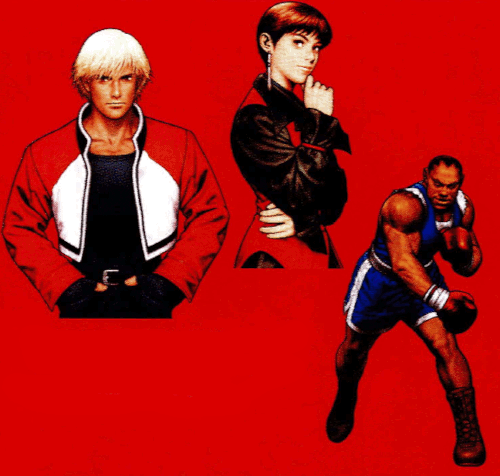
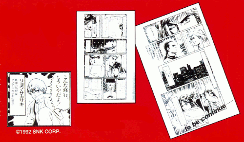

From the time he joined SNK, Shinkiro has brought character to fighting games through his powerful illustrations. From the particulars of his illustration to technique, to the reason he joined Capcom, we ask about his memories of illustrating Capcom characters.
DRAWING WHILE SMILING IN THE MIRROR
I've loved drawing for a long time, but it wasn't until I decided that I wanted to make a living off of it that I started illustrating seriously. There was a time when I drew manga, actually. It was serialized in a national magazine and everything, but I was plagued with self-conscious fears. "I don't have any talent". So, I didn't end up doing it for long.
On the road to working in the game industry I went through design school, an illustration office, and manga work, but to tell you the truth, at the time, and even now, I've never had a particular interest in games. I was just living in Esaka (the location of SNK's main office at the time) and happened to see that SNK was hiring, so I applied without even knowing they were a game company.
As far why I joined Capcom, at the time SNK was developing the Neo Geo Pocket SNK vs. Capcom, there was a lot of interaction and exchange going on between the two companies' design departments.
From then, I worked on Capcom's Capcom vs. SNK games, and before I knew it, I was in the seat behind Kinu Nishimura (laughs). I know it might look like it was a case of headhunting, but it was actually a transfer agreed upon by both Capcom and SNK, so that's not quite right… Just something of a quirk of fate.
I did this when I was at SNK too, but whenever I need to draw a body or muscles, I'd reference bodybuilding or fitness books. For clothes, I'd put on the clothes I have on hand, so that I could capture the feel of it actually being worn by a person. I've actually put on a hakama myself in order to draw Geese's hakama (laughs). And to capture subtle expressions, I'd draw while looking at myself in the mirror. I feel like if you saw me drawing while smiling into the mirror, furrowing my brow, it'd be pretty unsettling. Not exactly something I want people to see (laughs).

(All of Shinkiro's illustration is done digitally. "From the rough sketch, I draw it all in Photoshop. I don't use pen and paper at all. Coloring is done with many, many adjustment layers". Thanks to Shinkiro's influence, many members of Capcom's design division have started using this technique. By the way, we were surprised to find that the Shinkiro-style illustrations for the SNK characters in the first game where actually done by Capcom designers imitating his style.)
THERE'S MEANING TO THE SNK TOUCH, THE SHINKIRO TOUCH
If you compare them to SNK's characters, Capcom's characters tend to have more unrealistic, anime-like proportions, which I had some trouble with. Drawing cute girls in that style is particularly tough! I worried quite a bit this time over how cute to make them. I had to make sure it didn't get too similar to Kinu's drawings, or too different from my usual style, so it was a tricky balance. I was definitely worried about angry fans being like "this is all wrong, this isn't Morrigan at all!", but because this was for a game where Capcom and SNK characters are all under one roof, I decided that there was good reason to stick with the SNK touch, to the Shinkiro touch, until the end.
With that Shinkiro touch, big, muscular characters are well suited to my style, and I could draw them pretty naturally. Characters like Zangief and Blanka have muscles to spare, and are just these big, half-naked guys, so they were fun to draw. Clothes are tough to draw, after all. I was in charge of the main illustration that ended up becoming the main poster, and if they hadn't told me things like Chun-Li being the Capcom representative character, or that Haohmaru should be a focus, I would've drawn nothing but the muscular characters. Though of course there was part of me that was like "I wanna draw Chun-Li!!".

(As Shinkiro mentioned, he once drew manga. From the now ten-year-old Neo Geo version of Art of Fighting, here is one of his comics included in the game's manual!)